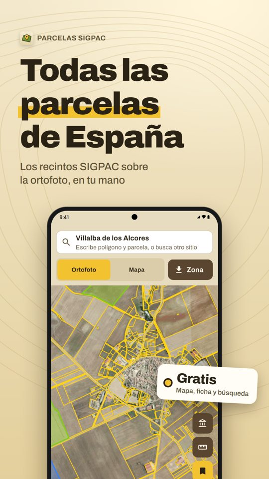
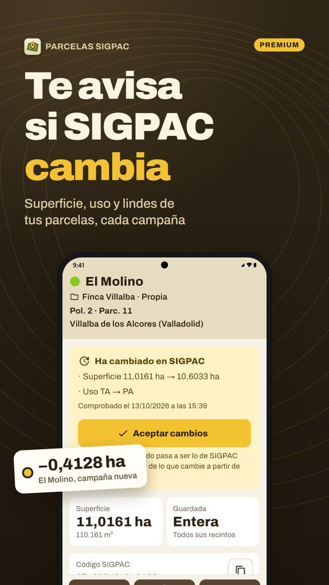
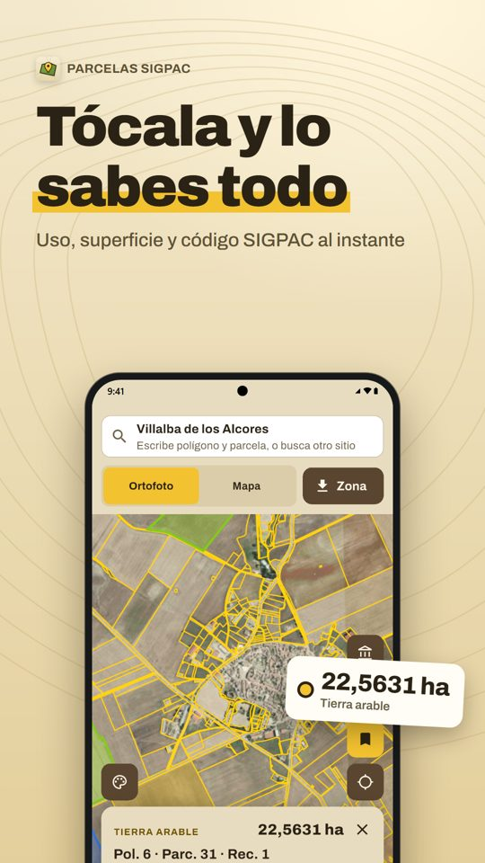

App para Android e iPhone · Gratis, con Premium opcional
Tus parcelas SIGPAC y del Catastro, en el móvil
Busca cualquier recinto por código SIGPAC, referencia catastral, coordenadas o pueblo, mira su ficha completa y guarda tus parcelas. Sin anuncios y sin cuenta.
Disponible pronto en el App Store y Google Play
App independiente, no oficial. Datos públicos de SIGPAC (FEGA), Catastro e IGN con licencia CC BY 4.0; son informativos y no tienen validez legal.
Lo que te pasa hoy, y lo que cambia
El visor oficial se hace difícil en el móvil, y en el campo a veces no carga.
Los recintos sobre la ortofoto, pensados para el móvil. Lo último que has visto se guarda para cuando no hay cobertura.
SIGPAC por un lado y el Catastro por otro.
Las dos cosas en la misma ficha, con la superficie SIGPAC y la catastral comparadas.
Entre campañas cambia un recinto y te enteras tarde.
Avisos cuando cambian la superficie, el uso o las incidencias de tus parcelas guardadas (Premium).
Las parcelas, apuntadas en papel o en fotos sueltas.
Tus parcelas en grupos o fincas, con las hectáreas totales, fotos, notas y libreta de labores.



Gratis y Premium
Gratis
- Mapa con los recintos SIGPAC sobre la ortofoto del PNOA o el mapa base
- Toca cualquier recinto: uso, superficie, pendiente, altitud, coeficiente de regadío, cultivo declarado de la campaña y referencia catastral
- Busca por polígono y parcela, código SIGPAC, referencia catastral, coordenadas o pueblo
- Capa del Catastro y colores por uso (cultivo, viñedo, olivar, pastos…)
- Mide superficies y distancias tocando puntos en el mapa
- Dónde estoy: en qué recinto te encuentras, coordenadas y cómo llegar
- Guarda hasta 3 parcelas con nombre, color y notas
Premium
- Todas tus parcelas, en grupos o fincas, con totales de hectáreas y tenencia
- Avisos de cambios en SIGPAC entre campañas
- Zonas descargadas para usar el mapa sin cobertura
- Libreta de labores: siembra, abonado, tratamientos, riego… con producto, dosis y coste
- Fotos y marcadores en cada parcela
- Exportar a Google Earth (KML/KMZ), GeoJSON, GPX, Excel y PDF, e importar
- Medir caminando con el GPS
4,99 €/mes o 19,99 €/año, con 7 días gratis la primera vez. Si caduca, no se borra nada.
Disponible pronto en el App Store y Google Play
Preguntas frecuentes
¿Es la app oficial del SIGPAC o del Catastro?
No. Es una app independiente que usa los datos públicos de SIGPAC (FEGA), la Dirección General del Catastro y el IGN, con licencia CC BY 4.0. Los datos son informativos y no tienen validez legal.
¿Cómo encuentro mi parcela?
Escribe en la búsqueda el código SIGPAC (provincia, municipio, polígono, parcela y recinto), la referencia catastral, unas coordenadas o el nombre del pueblo. También puedes ir al mapa y tocar el recinto.
¿Cómo sé la referencia catastral de una finca?
Toca el recinto en el mapa: la ficha muestra su referencia catastral junto a los datos del SIGPAC, y puedes copiarla o compartirla.
¿Funciona sin cobertura?
Lo último que has visto queda guardado para cuando no hay cobertura. Con Premium puedes descargar zonas de hasta unos 10 × 10 km con ortofoto y recintos. La capa del Catastro necesita conexión.
¿Sirve para hacer la PAC?
Sirve para consultar y preparar tus parcelas, pero la solicitud se hace con los visores oficiales. La libreta de labores es un registro personal: no es el cuaderno digital oficial.
¿Cubre toda España?
El SIGPAC, sí. El Catastro estatal no incluye Navarra ni el País Vasco, que tienen catastro propio; la app lo avisa.
¿Cuánto cuesta?
Es gratis hasta 3 parcelas guardadas. Premium cuesta 4,99 € al mes o 19,99 € al año, con 7 días gratis la primera vez. Si Premium caduca no se borra nada.
¿Hace falta registrarse?
No. No hay cuenta ni publicidad. Tus parcelas, notas y fotos se guardan solo en tu móvil.
Guías
- Cómo ver tu parcela SIGPAC en el móvil, paso a paso
- Cómo saber la referencia catastral de una finca rústica
- Diferencia entre SIGPAC y Catastro, y por qué no coinciden las superficies
- Usos SIGPAC: qué significan TA, PS, OV, VI y los demás códigos
- Cómo medir la superficie de una finca o un terreno
- Solicitud de la PAC: cuándo se presenta y qué revisar antes en el SIGPAC
Quién la hace
Parcelas SIGPAC y Catastro es un proyecto independiente de Pau Sevilla Rodríguez, hecho en España. Para dudas o problemas, en la app y en la página de soporte.
Fuentes: SIGPAC (MAPA / FEGA) · Dirección General del Catastro · Instituto Geográfico Nacional · Licencia CC BY 4.0.